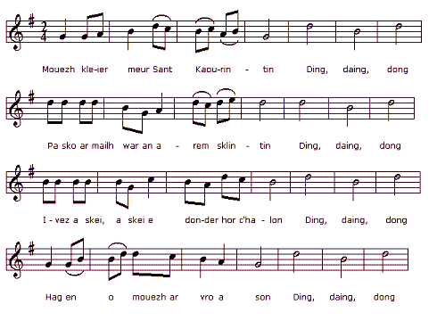
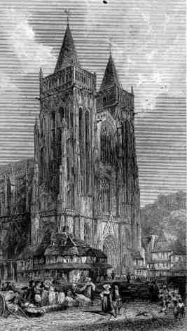
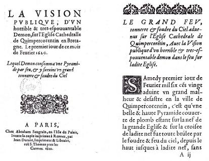
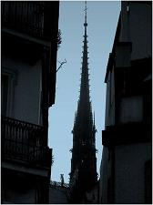

|
A propos de la mélodie La présente mélodie n'est donnée qu'à titre de fond sonore illustratif. Il n'existe pas, pour le moment, de mélodie connue: ni François Vallée, ni Maurice Duhamel lorsqu'ils recherchent les mélodies des "Gwerzioù" de F-M. Luzel n'ont songé à ce chant qui n'y figure pas. Il était pourtant connu de l'informatrice de dernier, Marguerite Philippe, ainsi qu'il ressort d'un cahier où un prêtre de Pluzunet avait consigné les titres des chants qu'elle disait avoir à son répertoire. On aurait pu songer aussi à un chant publié en 1933 dans les "20 chansons bretonnes", harmonisées par G. Arnoux, consacré au clocher de Saint-Pol de Léon, "An Tour dantelezet" (Le clocher ajouré). |
 Kleier Kemper (Cloches de Quimper) tiré de"Yaouankiz a gan", 15 chants bretons harmonisés par Polig Monjarret, collection "Kendalc'h" publiée dans les années 30. (Source: le site de M. P. Quentel - voir liens). |
About the tune The present tune is an arbitrary sound background to this page. No tune set to this lament is known, so far: neither François Vallée, nor Maurice Duhamel, when they investigated the tunes set to the "Gwerzioù" gathered by F-M. Luzel, thought of this song that is not included in the latter's collection. Yet it was known to his informant, Marc'harid Fulup, as evidenced by a copybook where a Pluzunet priest had recorded the titles of songs she claimed to be able to sing. We also could have chosen a tune published in 1933, in "20 chansons bretonnes", arranged by G. Arnoux, dedicated to the steeple of Saint-Pol de Léon church, "An Tour dantelezet" (The lace-worked tower). |
|
|
|
|
|
|
|
La "Tour de plomb" Comme l'indique F-M. Luzel dans "Veillées bretonnes" (1881): "Ce n'est pas la grande tour de la cathédrale de Quimper, comme on pourrait le croire d'après le gwerz breton, qui fut frappée par le feu du ciel, mais bien une simple pyramide ou flèche en bois, recouverte de plomb, et qui s'élevait au-dessus de la toiture de l'église, dans la partie qui correspond à la croisée du transept." L'archiviste du Finistère Le Menn précise dans sa "Monographie de la Cathédrale de Quimper" (p. 221): "Peu de personnes se doutent qu'une flèche en charpente recouverte de plomb, s'élevait autrefois au centre de l'église. Cependant si l'on prend la peine de visiter les combles de la cathédrale, on remarque, dans la partie qui correspond à la croisée du transept, les poutres qui servaient de base à cette flèche, et qui portent encore les traces de l'incendie qui la détruisit au XVIIE siècle. Elle fut construite [...] en 1468, et si l'on en juge par les détails du compte qui mentionne sa construction, elle devait richement ornée d'arcatures et de pinacles. Ce fut le 1er février 1620 qu'elle fut frappée par la foudre, et entièrement détruite." Il cite ensuite la délibération du 7 février 1620 du chapitre de la cathédrale où il n'est pas question de diable attiré par la profanation du sanctuaire, mais uniquement des mesures de sauvegarde à prendre dans l'immédiat. La flèche ne fut pas rétablie et le plomb sans doute réutilisé ailleurs. Le Menn expose en outre que la gwerz publiée par G. Milin (version N° 2 ci-après) "est un pastiche des plus grossiers" en invoquant des erreurs: Dans l'ouvrage précité, Luzel défend Milin: "il suffit d'avoir un peu étudié la poésie populaire et surtout d'en avoir recueilli aux sources, pour savoir que les inexactitudes et les fautes matérielles les plus choquantes pour le savant, loin d'être des preuves probantes contre l'authenticité d'une pièce, témoignent souvent, an contraire, en faveur de son caractère vraiment populaire." Ce sont ces mêmes caractéristiques de la gwerz, en particulier le besoin éprouvé par le chanteur d'adapter son texte aux données locales, qui expliquent les divergences entre les diverses versions (action située à Quimper, Quimperlé, Ploubezre - prononcé "Plouber"...). On remarque aussi l'usage, maitrisé dans la version 1, immodéré dans les autres versions, de la formule rituelle de lamentation "Cruel le cur qui n'eût pleuré..." (cf. La peste d'Elliant). La gwerz et le canard La gwerz que La Villemarqué fut le premier à collecter a donc trait à la destruction par la foudre de la flèche qui surmontait la croisée du transept de la cathédrale de Quimper, le 1er février 1620. Cette gwerz met en relief le rôle joué par l'évêque qui intervint pour calmer les esprits alors qu'on mettait à l'abri les objets précieux du sanctuaire. En même temps, elle met l'accent sur une pratique magique, la libation de lait de femme, à quoi l'on impute l'extinction spontanée de l'incendie. Cette gwerz fut découverte dans le 1er cahier de Keransquer par Donatien Laurent qui la publia en 1989 dans ses "Sources du Barzaz Breiz". En 1864, le folkloriste Gabriel Milin avait publié une autre version de cette gwerz, collectée en 1857 dans la région de Morlaix, dans le "Bulletin de la Société Académique de Bretagne". L'authenticité de cette pièce est garantie par les manuscrits de de Penguern qui collecta dans la même région (Trégor) 4 autres versions concordantes qui ne furent accessibles à Milin que 3 ans plus tard. Celui-ci rapprochait la gwerz d'un récit en français publié à Rennes en 1620 sous forme de journal occasionnel appelé "canard", par Pierre-Jean Durand, l'imprimeur officiel du diocèse de Rennes. Ces deux sources parallèles interprètent les faits de la même façon: le diable est à l'origine de l'incendie qui est maîtrisé par le recours à la magie teintée de religion (pain de seigle consacré; prières d'exorcisme; eau bénite). Les différences résident dans la théâtralité du récit de la gwerz (la désignation du curé de Quimper pour négocier avec le Démon), opposée à l'aspect factuel du récit français et dans la censure d'éléments contraires au prestige du clergé: Nous avons déjà rencontré ces vertus surnaturelles attribuées au lait de femme à propos de la Gwerz de Sainte Henori, patronne des nourrices, commentée à la page Sainte Azénor et à celui de la Sainte Vierge, à la strophe 12 de La complainte des trépassés, où les âmes du purgatoire implorent la Sainte mère de verser son lait sur leurs plaies. Ceci illustre comment la gwerz vient utilement compléter, pour l'historien des mentalités et des comportements, les non-dits des sources écrites. A fin octobre 2014, éclatera à Quimper une nouvelle querelle de clochers: une marche de protestation contre un projet de mosquée avec minaret porté par la communauté locale turque! Sources: L'essentiel des présentes informations est tiré de l'article de T. Rouaud paru dans Musique Bretonne n° 156 (novembre-décembre 2000) (http://follenn.chez.com/tourplomb.html). Melle Eva Guillorel a également consacré à la "Tour de Plomb" un chapitre entier extrêmement détaillé (18 pages, 4 annexes, 71 notes) de sa thèse de doctorat consultable en ligne, "La complainte et la plainte : chansons de tradition orale et archives criminelles" - 2008. |
The leaden Steeple As stated by F-M. Luzel in "Veillées bretonnes" (1881): "It was not the higher bell tower of Quimper Cathedral, as we are tempted to infer from the Breton lament, that was thunder-stricken, but a mere wooden pyramid or steeple covered up with lead, built on top of the church's roofs, above the transept." Departmental Archivist Le Menn goes into the matter in his "Monographie de la Cathédrale de Quimper" (p. 221) as follows: "It is not generally known, that Quimper cathedral formerly was surmounted in its middle by a tall timbered steeple covered with lead plates. Yet whoever cares to climb up and have a look at the roof trussing will notice, just above the transept crossing, timberworks used as a basis for this steeple, still displaying places charred by the destructive 17th century fire. The steeple was put up [...] in 1468, and judging from the detailed accounts mentioning its construction, it must have been richly adorned with arcatures and pinnacles. On 1st February 1620 it was struck by lightning and utterly dilapidated." He then quotes the minutes of the meeting, on 7th February 1620, of the cathedral's chapter, which mention no devil and no sinful desecration of the sanctuary, but only urgent measures to be taken to safeguard the impaired building. The steeple never was re-built and the lead was, very likely, salvaged to be used at other places. Le Menn maintains furthermore that the gwerz published by G. Milin (version N° 2 below) "is a very coarse forgery", as it contains at least two misrepresentations: In the aforementioned book, Luzel defends Milin: "Whoever has the slightest insight in traditional lore and, above all, happened to collect it from the singing of country folks, knows perfectly well that the most shocking inconsistencies and material mistakes, far from hinting at fraud or abuse, are on the contrary trustworthy witnesses for genuine rusticity." Other idiosyncrasies of authentic gwerzioù, especially the urge felt by the singer to adapt his lyrics to local history and geography, account for the discrepancies between the individual versions (the place is now Quimper, now Quimperlé, now Ploubezre - pronounced "Plouber"...). Very noticeable is also the recourse, controlled in version 1, immoderate in the other versions, of the standard lamenting phrase "Cruel-hearted was whoever did not cry..." (see The Plague of Elliant). The gwerz and the broadside newsletter The gwerz which La Villemarqué was the first to commit to writing refers consequently to the destruction by a flash of lightning of the steeple surmounting the transept crossing of the Quimper cathedral, on 1st February 1620. It is devised to extol the part played by the Bishop who endeavoured to pacify people during the salvage of the precious things kept in the sanctuary. At the same time it points out a strange magic practice, "woman's milk libations" supposed to bring about self-extinction of fires. This gwerz was discovered in the 1st Keransquer copybook by Donatien Laurent published it in his "Sources du Barzaz Breiz" in 1989. Previously, in 1864, folklorist Gabriel Milin had contributed another version of that lament, collected in 1857 in the Morlaix area, to the "Bulletin de la Société Académique de Bretagne". The genuineness of this piece is corroborated by J-M. De Penguern's collection of handwritten songs who gathered in the same area (Trégor) 4 other versions tallying with Milin's song, to which the latter had access only three years later. Milin paralleled the gwerz with an account in French language printed in 1620, as an ephemeral broadside newsletter, a so-called "canard", by Pierre-Jean Durand, with a heading that read "by appointment to the Bishop of Rennes". These two sources account for these events much in the same way: the devil is responsible for the fire which is brought under control by magic mixed with religious proceedings (consecrated rye loaf; exorcism; aspersion with holy water). The differences chiefly consist in the theatrical narrative of the events in the gwerz (e.g. the forcible appointment of the vicar of Quimper as the volunteer who was to negotiate with the demon), as opposed to the matter-of-fact tone pitched in the French language record and in the suppression of particulars that might harm the prestige of the clergy: We already came across those supernatural merits ascribed to woman's milk: in the Gwerz of Saint Henori, the patron saint of wet nurses, discussed on page Saint Azenor; still more astonishing, to the milk of the Holy Virgin, in stanza 12 of All Souls' Hymn, featuring souls in purgatory imploring her to spill her milk on their woeful wounds . This highlights how a gwerz may conveniently complement written records and restore elements left out, for historians engaged in the study of mentality and behaviour. By the end of October 2014, a new page of the history of Quimper steeples will be written: a protest march against the construction of a mosque with minaret by the local Turkish community! Sources: Most of the data in the present notes are derived from an on-line essay by T. Rouaud published in "Musique Bretonne" n° 156 (November-December 2000) (http://follenn.chez.com/tourplomb.html). Melle Eva Guillorel also dedicated to the "Leaden Tower" a whole, exhaustive chapter (18 pages, 4 annexes, 71 notes) of her downloadable doctoral thesis, "La complainte et la plainte : chansons de tradition orale et archives criminelles" - 2008. |
Le Grand Feu, tonnerre et foudre du Ciel, advenus sur l'Eglise Cathédrale de Quimper-Corentin en Basse-Bretagne
Samedi, premier jour de février 1620 advint un grand malheur et désastre en la ville de Quimper-Corentin: une belle et haute pyramide couverte de plomb fixée sur la nef de la grande église, à la croisée de ladite nef, fut entièrement brûlée par la foudre et le feu du ciel, depuis le haut jusqu'à ladite nef, sans qu'on pût y apporter aucun remède. Voici ce qui s'est passé, depuis le commencement jusqu'à la fin: |
 La Cathédrale de Quimper vers 1830 "La Bretagne ancienne et moderne" de Pitre-Chevalier Les deux flèches de pierres ajourées actuelles furent érigées sur les tours à l'initiative de l'évêque Mr Graveran, par Joseph Bigot, en 1855-1856.  Première page du "canard" de 1620 Foll-mik a oa hon tadoù-koz? Sommes-nous moins crédules que nos ancêtres? Are we less gullible than our forefathers?  Flèche de ND de Paris |
The Big Fire, Thunder and Lightning strike, on the Cathedral of Quimper-Corentin in Lower-Brittany
On Saturday, the first of February 1620, there was a cruel mishap and disaster in the town Quimper-Corentin: a stately, high pyramid with a leaden cover topping the nave of the cathedral, over the transept crossing, was burnt to ashes by a flash of lightning, from the very top of it down to the said nave, which nobody could prevent. Here is a record of what happened from beginning to end: |